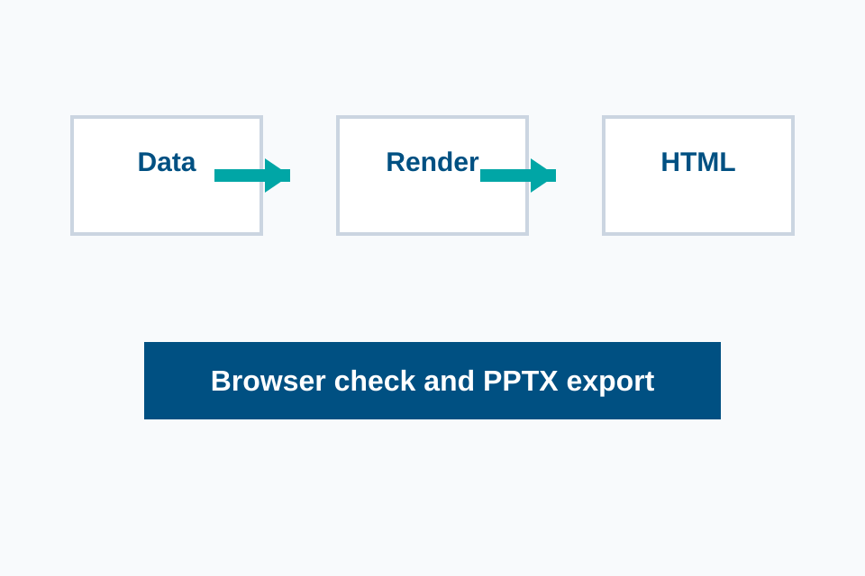

01
Template
Controls the fixed slide frame, title hierarchy, footer and safe area.
Minimal Loop
用固定模板、结构化数据和浏览器预览建立第一版 PPT 生成闭环。
Component Library
正文页优先选择稳定组件，减少每次自由排版带来的溢出和导出风险。
Templates and component CSS are reusable assets. Codex should fill data into them instead of rewriting visual structure every time.
The generated HTML keeps text, table cells, simple shapes and images as separate DOM nodes for later PPTX export.
Controls the fixed slide frame, title hierarchy, footer and safe area.
Controls reusable content structure such as cards, tables, flows and image-text blocks.
Provides titles, bullets, table rows, figure paths and references without complex CSS.
| Asset | Responsibility | Editable | Risk |
|---|---|---|---|
| Template | Fixed page frame | Partial | Low |
| Component | Content layout | Yes | Low |
| Image | Visual evidence | No | Medium |
| Full screenshot | Fallback only | No | High |
Confirm page list, slide type, content source and component choice.
Write deck.data.json with structure and content only.
Combine templates, component HTML and theme CSS into deck.html.
Run overflow, layout, asset and screenshot validation before export.

Image-text pages keep the figure and narrative separate, making the exported PPT easier to inspect and edit.
Next
下一阶段可以接入油猴脚本和 dom-to-pptx，验证 HTML 到 PPTX 的可编辑导出。